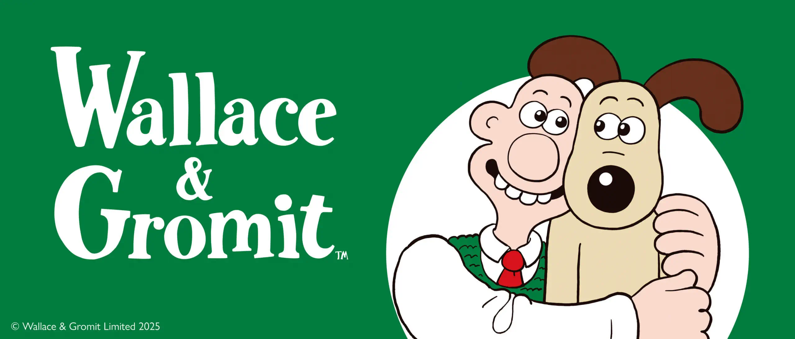

Vol.21 / British Clay Legend
指紋が宿す職人魂：
『ウォレスとグルミット』の構造解体
2026.04.10 UP


[Wallace and Gromit: The Wrong Trousers]
◎ 作者経歴：ニック・パークとアードマンの魔法
1958年英国生まれ。アードマン・アニメーションズにおいてアカデミー賞を4度受賞したレジェンド。彼は粘土に「指紋」をあえて残すことで、完璧なCGにはない「手触り感」を芸術へと昇華させました。
◎ マニアック深掘り：魔法の粘土「アードマン・ミックス」
アードマン作品で使用される粘土は、特注の「アードマン・ミックス」。照明の熱による溶解を防ぐ高い融点と、数ヶ月の撮影でも色が変化しない厳格な「マスターバッチ（色の素）」管理が、工場の品質管理並みに徹底されています。
◎ 徹底解剖：40種類の「口」によるリップシンク
ウォレスの軽快な喋りは、1コマごとに差し替えられる数十種類の「口パーツ」によって支えられています。音声波形（ドープシート）に合わせ、ミリ秒単位でパーツを管理・運用するプロセスは、IT資産管理における「バージョン管理」そのものです。
◎ 最新アップデート：19年ぶりの長編新作
『復讐はニワトリに (Vengeance Most Fowl)』(2025)
最新作では、ウォレスが開発した自律走行型ロボット「ノーボット」がハッキングされるという、現代の「IoTセキュリティ」をテーマにした物語が展開。アナログな粘土細工でデジタル社会の脆弱性を風刺する、アードマンらしい傑作です。
◎ 代表作・関連作まとめ
ペンギンに気をつけろ！ (The Wrong Trousers)
クライマックスの列車チェイスは、ストップモーション史に残るスピード感の極致。カメラワークと編集の妙技が光る。
ひつじのショーン
『ウォレスとグルミット』のスピンオフから生まれた大スター。セリフを排し、純粋な視覚的「動作」だけで感情を伝える高密度なアニメーション。
快適な生活 (Creature Comforts)
実際のインタビュー音声に動物の粘土アニメを同期させる、初期アードマンの革新的ドキュメンタリー手法。